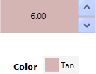
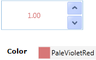
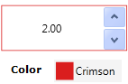
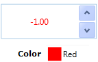
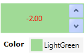
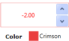
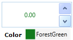

You can customize the appearance of the UpDown control by using the properties exposed by the UpDown control.
The appearance of the UpDown control can be changed when the UpDown control has focus by using the following properties:
· FocusedBackground
· FocusedBorderBrush
· FocusedForeground
These properties will be enabled only if the EnableFocusedColors property is set to true.

Figure 1160: FocusedBackground

Figure 1161: FocusedForeground

Figure 1162: FocusedBorderBrush
The appearance of the UpDown control can be changed when the value in UpDown is negative by using the following properties:
· NegativeBackground
· NegativeBorderBrush
· NegativeForeground
These properties will be enabled only if the EnableNegativeColors property is set to true.

Figure 1163: NegativeForeground

Figure 1164: NegativeBackground

Figure 1165: NegativeBorderBrush
The color of the zero value can be changed by using the ZeroColor property. The ZeroColor property can be enabled by setting the ApplyZeroColor property to true.

Figure 1166: ZeroColor